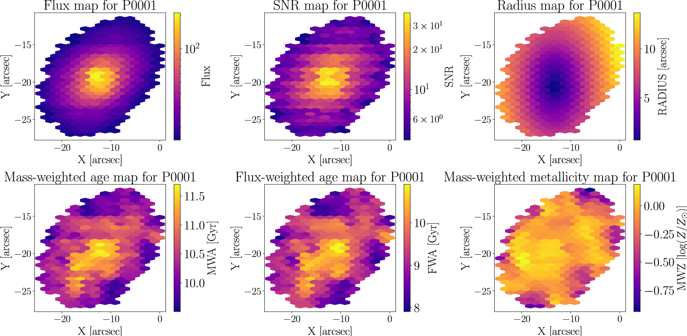

Research & Projects
Interests: galaxy evolution, cluster environments, spectral fitting, multiplex spectroscopy, scientific Python tooling.
BSc Thesis
Title: Star Formation Histories of Galaxies in WEAVE Galaxy Clusters
Summary: Pipeline for L1/L2 WEAVE products, spectral fitting for SFH and kinematics across galaxies.
Selected Tools & Projects
- WEST (WEAVE Essential SFH Tools)